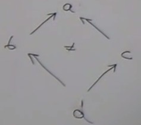
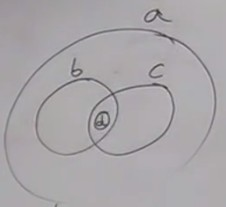

Inclusion
This deals with an interesting case to study.Let's define a relation on sets, the relation of inclusion. For a set, being a subset of an other set is a relation that we note ⊆.
What kind of relation is it ? An order, a preorder ?
Every set is a subset of itself, so we have identity (in terms of orders, we say it is reflexive).
It is transitive : if a is
a subset of b and b is a subset of c then a is a subset of c.
And the associativity is obvious.
So this is a preorder.
This is a partial order because there may be loops : if a ⊆ b ⋀ b ⊆ a ⇒ a = b.
This is not a total order because there may exist disjoint sets or sets that partially overlap.
We can have a diamond situation :


We have a category based on sets where the arrows are not functions, but relations. Some versions of this category is used in modeling topology ; open sets have this property of inclusion.
Kleisli category
This is a category based on the category of types and functions.We can get to this category by solving a programming problem :
We maintain a library of functions and a new requirement comes : every function must be auditable : every function has to create a log "I was called".
The simplest solution that comes to mind of imperative programmers is creating a global log. So we have in C++
string log = "";If we have a function
bool negate(bool x){
return !x;
}
To add a trace in the log, we can modify it :
bool negate(bool x){
log += "not!";
return !x;
}
This looks simple, but is it really simple ?
It introduces a hidden dependency between the bodies of our functions a the global log.
This can't be seen if we look at the signature of
negate : it just takes a bool and returns a bool.
If we remove the declaration of the global log, all the functions are broken without touching them.
But let's keep that solution.
It works until a new requirement comes : "Our library must be usable in a multi-threaded environment".
So let's have a global lock ! But locks don't compose, so we can generate dead-lock situations.
We are then obliged to deal with the complexity hidden behind this apprently simple solution.
This could not happen in Haskell as all functions are supposed to be pure.
In C++, this could be implemented as a pure function :
pair<bool,string> negate(bool x, string log){
return make_pair(!x, log + "not!");
}
OK, this function is pure, there is no side effects, but it's a bit awkward :
-
We saw that a function is pure if it can be memoized.
Memoizing the first version of the function is easy, the argument is a boolean so the lookup table contains two elements.
For the second version, memoizing the boolean argument is easy, but for the string argument, every time we call it with a diffferent string we have a different result. So to memoize it we should consider all the possible different history of calls. -
An other problem is the use of
+in the codelog + "not!".
Why should a function like negate should know about appending strings ? It acts locally but it has this element of knowledge that is outside of its scope. The principle of separation of concerns is not respected.
pair<bool,string> negate(bool x){
return make_pair(!x, "not!");
}
But then who does the concatenation of the log ?
What do we do with these functions ? We compose them.
We can modify the way we compose these functions.
Let's define a new way of composing functions that will take care of composing functions that return these pairs.
With regular composition, we would write :
function <c(a)> compose(function<b(a)> f, function<c(b)> g){
return [f, g](a x){
auto p1 = f(x);
auto p2 = g(p1);
return p2;
}
}
-
a,bandcare types. -
The function
compose()returns a function which takes an argument of typeaand returns an object typec. -
compose()'s arguments are two functions :f- takes an argument of typeaand returns an object typebg- takes an argument of typeband returns an object typec
But we want functions that return pairs (embellished functions)
function <pair<c, string>(a)> compose(function<pair<b, string>(a)> f, function<pair<c, string>(b)> g){
return [f, g](a x){
auto p1 = f(x); // p1 is a pair now
auto p2 = g(p1.first);
return make_pair(p2.first, p1.second + p2.second); // log concatenation done here
}
}
This new way of composing function takes care of appending the log.
Do we have a category with this composition ?
-
Is it associative ? In the first parts of the pairs, we are just doing regular composition, which was associative before.
In the second parts, we do string concatenation, which is associative. -
Identity is
function pair<a, string> id(a x){ return make_pair(x, ""); }String concatenation is a binary operator that is associative and has a unit. So this works for any monoid.
An arrow from a to b is a function from a to a pair (b, string), an embellished function.
This is the Kleisli category ; its arrows (the embellished functions) are called the Kleisli arrows. Kleisli arrows can be defined for a lot of embellishements.
This is a view of a monad. These arrows are composable because this embellishement is a monad.
A monad is just a way of composing special types of functions.
When we redefine composition, we have this one additional degree of freedom. If we use this additional degree or freedom, we use a monad.